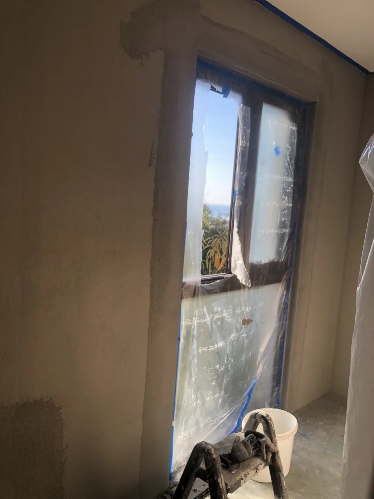

Плесень в квартире в Батуми: почему грибок возвращается и как убрать его по технологии
Плесень в квартире в Батуми возвращается, если не убрать причину: 2 435 мм осадков в год и холодные углы. Разбираем, как найти источник и убрать грибок.